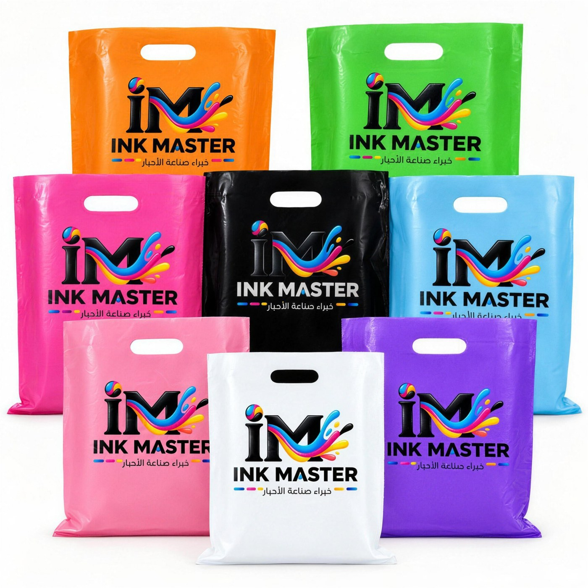

01 · INKS
الأحبار المذيبة
هي أحبار ذات أساس مذيب مصممة خصيصاً للطباعة على الأسطح غير المسامية، تتميز بقوة التصاق عالية وسرعة جفاف فائقة وثبات ممتاز. تستخدم على نطاق واسع في طباعة الشكائر المنسوجة وأكياس البلاستيك ورولات التغليف.
المميزات
- قوة التصاق عالية على البلاستيك
- مقاومة ممتازة للاحتكاك والخدش
- سرعة جفاف عالية
- ثبات عالي أثناء التشغيل
- قوة لونية وتغطية ممتازة
الاستخدامات
- الشكائر المنسوجة (PP Woven)
- أكياس البلاستيك (PE / HDPE)
- رولات التغليف والـ Lamination
- شكائر السكر والدقيق والأعلاف
